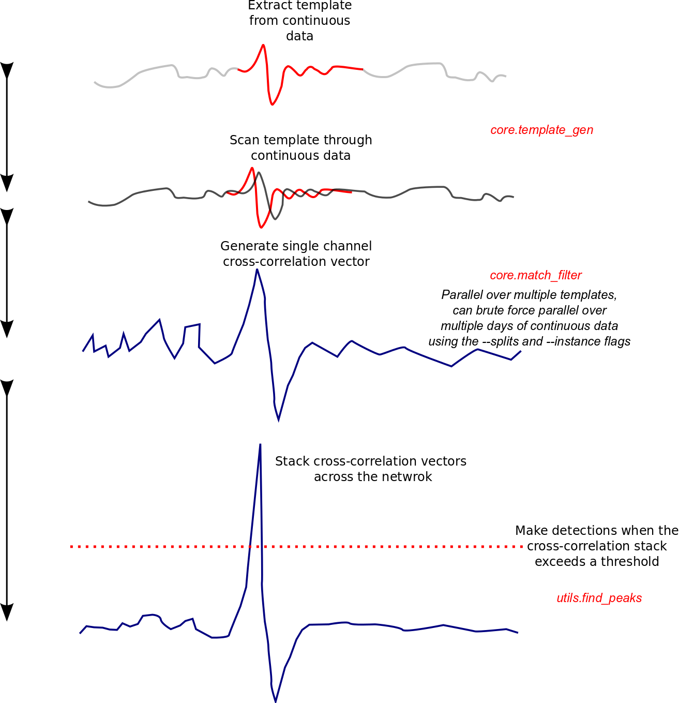

2.2. Matched-filter detection¶
In this section we will outline using the templates generated in the first tutorial to scan for similar earthquakes within a day of data. This small example does not truly exploit the parallel operations within this package however, so you would be encouraged to think about where parallel operations occur (hint, the code can run one template per cpu), and why there are –instance and–splits flags in the other scripts in the github repository (hint, if you have heaps of memory and cpus you can do some brute force day parallelisation!).
The main processing flow is outlined in the figure below, note the main speedups in this process are achieved by running multiple templates at once, however this increases memory usage. If memory is a problem there are flags (mem_issue) in the match_filter.py source that can be turned on - the codes will then write temporary files, which is slower, but can allow for more data crunching at once, your trade-off, your call.
{kind=link}
"""
Simple tutorial to demonstrate some of the basic capabilities of the EQcorrscan
matched-filter detection routine. This builds on the template generation
tutorial and uses those templates. If you haven't run that tutorial script
then you will need to before you can run this script.
"""
from eqcorrscan.utils import pre_processing
from eqcorrscan.utils import EQcorrscan_plotting as plotting
from eqcorrscan.core import match_filter
from joblib import Parallel, delayed
import glob
# This import section copes with namespace changes between obspy versions
import obspy
if int(obspy.__version__.split('.')[0]) >= 1:
from obspy.clients.fdsn import Client
else:
from obspy.fdsn import Client
from obspy import UTCDateTime, Stream, read
# First we want to load our templates
template_names = glob.glob('tutorial_template_*.ms')
if len(template_names) == 0:
raise IOError('Template files not found, have you run the template ' +
'creation tutorial?')
templates = [read(template_name) for template_name in template_names]
# Work out what stations we have and get the data for them
stations = []
for template in templates:
for tr in template:
stations.append((tr.stats.station, tr.stats.channel))
# Get a unique list of stations
stations = list(set(stations))
# We are going to look for detections on the day of our template, however, to
# generalize, we will write a loop through the days between our templates, in
# this case that is only one day.
template_days = []
for template in templates:
template_days.append(template[0].stats.starttime.date)
template_days = sorted(template_days)
kdays = (template_days[-1] - template_days[0]).days + 1
unique_detections = []
for i in range(kdays):
t1 = UTCDateTime(template_days[0]) + (86400 * i)
t2 = t1 + 86400
# Generate the bulk information to query the GeoNet database
bulk_info = []
for station in stations:
bulk_info.append(('NZ', station[0], '*', station[1][0]+'H*', t1, t2))
# Note that we are only using the first letter of the channel code to
# download all channels from that sensor at that site, e.g. if the
# channel code is HHZ we will download HHE and HHN as well.
# Set up a client to access the GeoNet database
client = Client("GEONET")
# Note this will take a little while.
print('Downloading seismic data, this may take a while')
st = client.get_waveforms_bulk(bulk_info)
# Merge the stream, it will be downloaded in chunks
st.merge(fill_value='interpolate')
# Work out what data we actually have to cope with possible lost data
stations = list(set([tr.stats.station for tr in st]))
# Pre-process the data to set frequency band and sampling rate
# Note that this is, and MUST BE the same as the parameters used for the
# template creation.
print('Processing the seismic data')
st = Parallel(n_jobs=10)(delayed(pre_processing.dayproc)
(tr=tr, lowcut=2.0, highcut=9.0, filt_order=3,
samp_rate=20.0, debug=0, starttime=t1)
for tr in st)
# Convert from list to stream
st = Stream(st)
# Set how many cores we want to parallel across, we will set this to four
# as this is the number of templates, if your machine has fewer than four
# cores/CPUs the multiprocessing will wait until there is a free core.
# Setting this to be higher than the number of templates will have no i
# increase in speed as only detections for each template are computed in
# parallel.
ncores = 4
# Now we can conduct the matched-filter detection
detections = match_filter.match_filter(template_names=template_names,
template_list=templates,
st=st, threshold=8.0,
threshold_type='MAD',
trig_int=6.0, plotvar=True,
plotdir='.', cores=ncores,
tempdir=False, debug=0,
plot_format='jpg')
# Now lets try and work out how many unique events we have just to compare
# with the GeoNet catalog of 20 events on this day in this sequence
for master in detections:
keep = True
for slave in detections:
if not master == slave and\
abs(master.detect_time - slave.detect_time) <= 6.0:
# If the events are within 6s of each other then test which
# was the 'best' match, strongest detection
if not master.detect_val > slave.detect_val:
keep = False
break
if keep:
unique_detections.append(master)
print('We made a total of ' + str(len(unique_detections)) + ' detections')
for detection in unique_detections:
print('Detection at :' + str(detection.detect_time) + ' for template ' +
detection.template_name + ' with a cross-correlation sum of: ' +
str(detection.detect_val))
# We can plot these too
stplot = st.copy()
template = templates[template_names.index(detection.template_name)]
lags = sorted([tr.stats.starttime for tr in template])
maxlag = lags[-1] - lags[0]
stplot.trim(starttime=detection.detect_time - 10,
endtime=detection.detect_time + maxlag + 10)
plotting.detection_multiplot(stplot, template,
[detection.detect_time.datetime])
2.2.1. References¶
- CM Boese, J Townend, E Smith, T Stern (2012). Microseismicity and stress in the vicinity of the Alpine Fault, central Southern Alps, New Zealand, JGR, doi:10.1029/2011JB008460
- CM Boese, KM Jacobs, EGC Smith, TA Stern, J Townend (2014). Background and delayed-triggered swarms in the central Southern Alps, South Island, New Zealand, G-cubed, doi:10.1002/2013GC005171